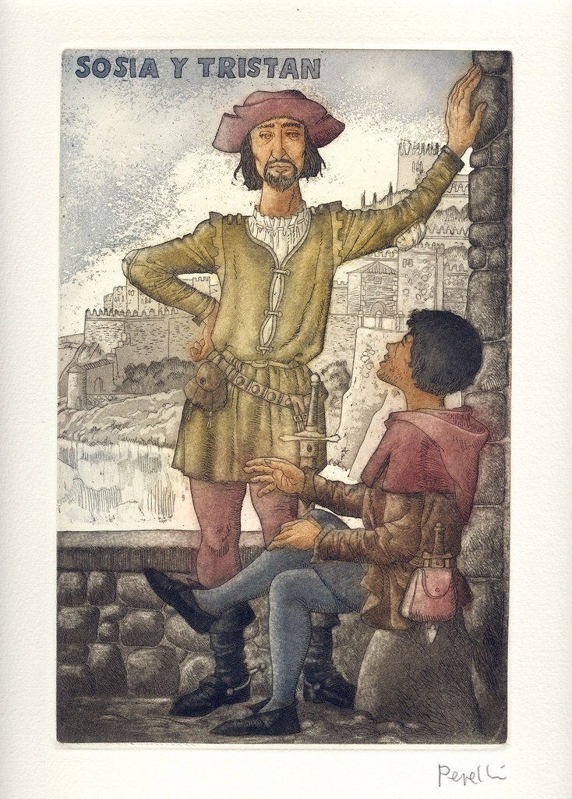
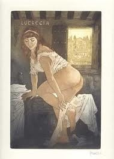

Personajes
Los personajes en la tragicomedia "La Celestina"
La Celestina es una obra literaria rodeada de hechizos y misterio por lo que resulta tan interesante, sobre todo cuando se trata de sus personajes. Calisto, Melibea y Celestina son los principales dentro de la obra. Sin embargo, todos disfrutan de características distiguidas que les dan vida y hacen que su papel sea esencial en la tragicomedia.
Personajes Primarios
Calisto
Es uno de los personajes principales caracterizado por ser un romántico empedernido, con una pasión inmesurable por la joven Melibea. Es un joven loco, inseguro y egoísta que utiliza un falso acto de hombre cortéz para conseguir lo que desea. Además es terco, algo que se oberva mediante su amor extremista, característica que lo que lo lleva a socorrer a las prácticas poco convencionales de la Celestina. Al final de la obra, Calisto sufre un accidente que acaba con su vida; cae por las escaleras mientras huye de la casa de su amada, Melibea.


Melibea
Melibea es otro de los personajes principales, conocida por ser una joven hermosa y perteneciente a la clase alta. A través de la novela ella evoluciona psicológicamente y pasa de ser una mujer que no le da mucha atención a Calisto a una sumisa que daría lo que fuera por su amante. Al enamorarse de Calisto, Melibea teme defraudar a sus padres y perder su honra razón por la cual actúa a sus espaldas. Luego de la muerte su gran amor, ella sufre una crisis emocional. Devastada, le confiesa a su padre el amorío que se había desarrollado entre ella y Calisto y se suicida.
Celestina
Es considerada la protagonista de la obra. Celestina es conocida como la hechicera del amor gracias a su habilidad infalible de enamorar mediante conjuros. Su motivo es el dinero, el éxito y la lujuria. Es sumamente astuta, egoísta, engañadora y codiciosa. Durante su juventud fue prostituta y al llegar a su vejez, Pármeno describe que su oficio pasó a ser uno de “labrandera, perfumera, maestra de hacer afeites y hacer virgos, alcahueta y un poquito hechicera”. Durante toda la obra muestra orgullo hacia su oficio. Debido a su gran experiencia, conoce todas las debilidades y pasiones humanas lo que utiliza a su favor para manipular a la mayoría de los personajes. Sin embargo, es su misma ambición y terquedad lo que la lleva la muerte. Esto ocurre al Sempronio y Pármeno, criados de Calisto, apuñalarla por no querer compartir las ganancias obtenidas por los esfuerzos de enamorar a Melibea.

Personajes Secundarios
Alisa y Pleberio
Son los padres de Melibea y representan la imagen de un matrimonio burgués. Se preocupaban por mantener su posición social y seguir con las tradiciones de la época, por lo que Melibea no les revela su amor por Calisto. Pleberio trabajaba para mantener el bienestar ecónimco con el fin de que a Melibea no le faltara nada. Alisa, junto a Pleberio, confiaba complenamente en su hija, ya que juraban que ella era ingenua e inocente. Esto le facilitaba a Melibea su reuniones con Calisto ya que no tenía que esforzarse mucho para ocultar sus intenciones. Mientras ella se encontraba con Calisto, sus padres estaban demasiado ocupados planificando una boda con otro hombre de su misma clase, con los beneficios a obtener de dicha unión en mente.
Sempronio
Era Criado de Calisto. Se caracteriza por ser egoísta, codicioso, desleal y no muestra mucho afecto por su amo ya que su beneficio propio es su prioridad. Se alió con la Celestina para exprimirle beneficios económicos a Calisto, utilizando su enamoramiento por Melibea como pretexto. Esta promesa de compartir ganancias es una que Celestina no cumple y junto a Pármeno la asesina. Muere degollado en la plaza del pueblo.


Pármeno
Era criado de Calisto. A diferencia de Semperonio, al inicio de la obra demuestra ser leal y se preocupa por el bienestar de su amo. Sin embargo, se dejó influenciar por la Celestina, quien despertó en él la avaricia y la lujuria. Por esta razón, hizo una alianza con ella y con Pármeno con el fin de aprovecharse de su amo para generear ganancias. Al la Celestina no cumplir su palabra, junto a Sempronio, la asesina. Al igual que Semperonio, muere degollado en la plaza del pueblo.
Elicia
Es familia de Celestina, viven juntas y es su pupila. Es prostituta y aunque es la supuesta amante de Sempronio, mantiene relaciones con otros hombres sin remordimiento. Vive despreocupada y enfocada en el placer, hasta que Celestina muere y se ve obligada a asumir más responsabilidades.


Areúsa
Al igual que Elicia, es pupila de la Celestina. Es amiga de Elicia y junto a ella planifica el asesinato de Calisto ya que ambas lo culpan por la muerte de Celestina, Sempronio y Pármeno. El acto consistió en ella enamorar a Sosia para que revelara los secretos de las reuniones de su amo con Melibea. Se convirtió en la amante de Pármeno como idea de la vieja hechicera.
Tristán y Sosia
Son fieles criados de Calisto luego de la muerte de Pármeno y Sempronio. Ambos son humildes y muy leales con su amo, al punto que lo protegen hasta el final de su vida. Sosia se enamora profundamente de Areúsa lo cual, con astucia, ella utiliza a su favor para alentarlo a revelar información acerca de Calisto y su amada. Tristán es astuto y afligido a Calisto, por lo que su muerte lo afectó gravemente.


Lucrecia
Es familia de Elicia, fiel criada de Melibea y constantemente vela por el bienestar de su ama. Le advirtió a Melibea sobre los peligros que representa Celestina y, auque trata y falla en el intento, se ocupó de guardar el secreto del amorío impuesto a su ama por la hechicera. Esto la convirtió cómplice de las acciones de Celestina.
Centurio
Es un hombre de mal carácter, conocido como un rufián y malhechor. Es encargado por Areúsa y Elicia de matar a Calisto y, aunque promete cometer el acto, no se atreve a cumplirlo lo que demuestra que su actitud de bravucón es tan solo una farsa.